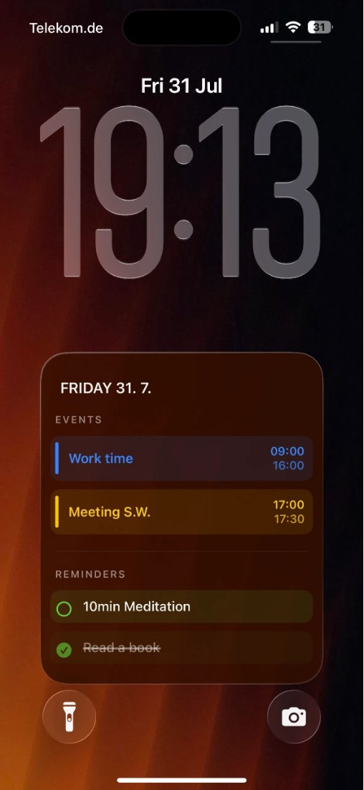

任务终于能和约会放在一起看
Calendarly最新版本把Todoist任务加入原有事件布局与小组件：用户在设置中打开Show with events，待办即可出现在日历事件之间。对于同时用日历安排时间、用Todoist追踪工作的人，这减少了抬起手机后还要切换另一张清单的步骤。更新还让Tasks实时活动按有无日期、全部或单个提醒列表筛选，避免工作和生活事项挤在同一窄条里。App Store显示一点五点四在观察前十四小时更新；这是本次可定位的新变化，不能把早已存在的整个壁纸产品当成首次上线。
Calendarly · 消费软件 · 交互更新

Calendarly最新版本把Todoist任务加入原有事件布局与小组件：用户在设置中打开Show with events，待办即可出现在日历事件之间。对于同时用日历安排时间、用Todoist追踪工作的人，这减少了抬起手机后还要切换另一张清单的步骤。更新还让Tasks实时活动按有无日期、全部或单个提醒列表筛选，避免工作和生活事项挤在同一窄条里。App Store显示一点五点四在观察前十四小时更新；这是本次可定位的新变化，不能把早已存在的整个壁纸产品当成首次上线。
官方设置教程从应用的Setup页面开始：允许读取日历，添加并运行一次Update Calendarly Wallpaper快捷指令，再到快捷指令自动化里选择每天的时间。只有设置为立即运行，流程才不会停在等待确认的通知后面。输出是重新绘制的图片，锁屏再次显示时才看到新内容；教程要求使用照片锁屏，天气或天文等自行渲染的样式不能直接替换。因而“无需打开应用”有具体前提，而不是后台持续任意修改系统界面的保证。没有成功授权、缺少快捷指令或时间设置不对，都可能留下旧图。
当前产品从手机已有的日历和提醒清单取材，用户选择哪些日历出现。开发者在Product Hunt回复中说明，已同步到Apple Calendar的Google日历目前也能显示；更直接的Google连接仍在计划中，不应把承诺的上线周当成已经完成。官网用日视图、周表、倒数与便签等版式说明同一份资料可以怎样呈现。这里的取舍是可见性与信息密度：一张壁纸让人较少分心，但装下整周工作、杂项待办和长备注，也可能让快速扫视失去重点。布局数量本身不证明计划会更容易执行。
官网说明无需Calendarly账号，支持iOS十六点六及以上；免费版提供九十六种布局，Pro增加全部布局、个人照片与组合设计。App Store说明日历和提醒在设备上读取和绘制，Todoist是可选的直接连接；设置后的日历壁纸可离线使用，任务同步与购买仍需要网络。这些条件把本地展示和外部任务服务分开。新版本还声称提高未打开应用时的小组件更新频率，但没有公布刷新间隔或保证每条变更即刻到达。因此评估应检查一条任务的修改何时出现在目标表面，而不能用漂亮壁纸替代时效性验证。